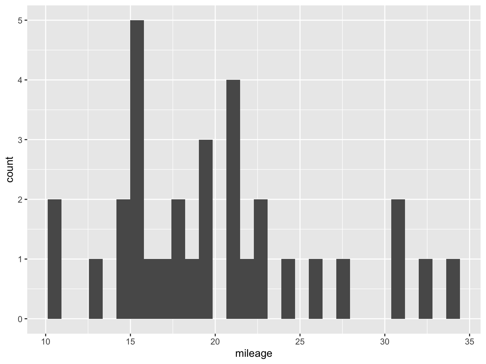
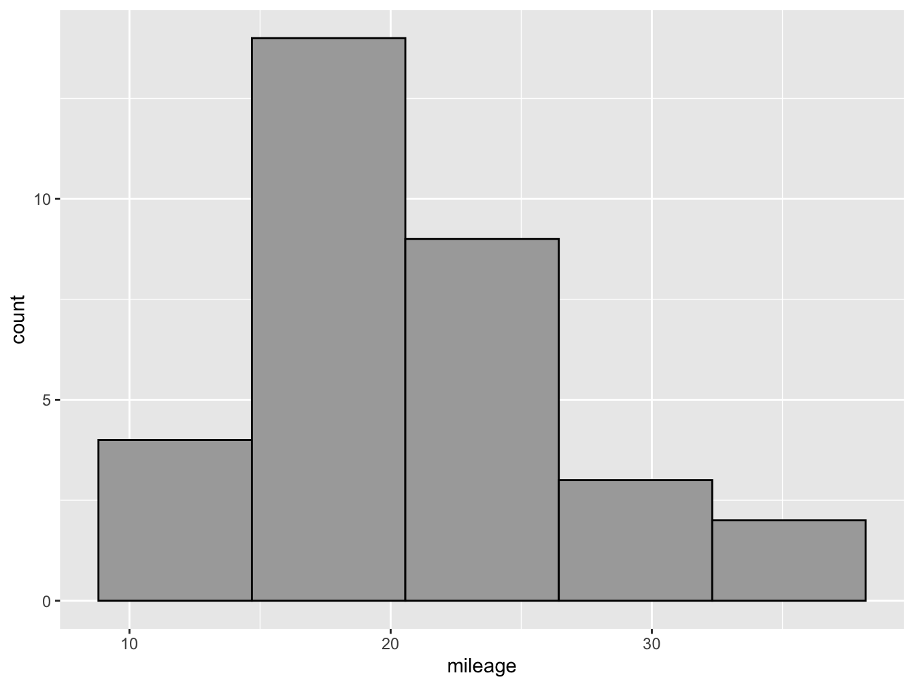

library(ggplot2)
library(dplyr)2 The Grammar of Graphics
2.1 The tidyverse packages
Throughout this course, we will be using tidy data principles1 to create several types of visualizations. The main package we will use is the tidyverse, which includes several useful tools for data wrangling, analysis and visualization. The first step then is to install the package! You can do this from the packages vignette in explorer pane in RStudio, or by writing install.packages("tidyverse") into the console pane.
Once the package has been installed, the next step will be to load the library so that we can start using it! Simply write the command below in a script the editor pane and click run, or directly in the console pane and press enter.
After installing tidyverse packages, we will get access to two very important functions which we will be using extensively. The first is the the command ggplot() from the package ggplot2 which will allow us to make plots based on the grammar of graphics. The second is the pipe operator or %>% from the dplyr package, which translates loosely to the phrase “and then”, and which we will use to put several commands and functions together in a pipeline.2
At the top of every R script, you will see the libraries used. For almost every chapter of this book we will use the two libraries below. IMPORTANT: every time you start a new R script or session, you must call on these libraries so R knows which commands you want to use!
2.2 The ggplot2 Package
The ggplot2 package is installed and loaded alongside the tidyverse package, though it can – and should – be called on separately. This is a very powerful tool to make print-quality graphs and all sorts of visual outputs. To do this, it draws on the grammar of graphics, which is a concept developed by Leland Wilkinson (Wilkinson 2005). The main idea behind this complex book is that plots can be divided into several elements, each with a specific role to play. ggplot2 has 7 such elements:
- Data
- Aesthetics
- Layers
- Scales
- Coordinates
- Facets
- Themes
Throughout this chapter, we will focus on the first three (Data, Aesthetics, Layers) which are the minimum requirements to make a basic plot. The element data tells R which vector(s) from your environment are going to be used to draw the plot. The aesthetics element determines which variable(s) will be used and in what capacity. The layers element tells R which type of geometry you wish to draw and in which order.
df %>%
ggplot(aes(x=var1,y=var2))+
geom_point()In the example above, we are telling R that there is an object df in our environment which has at least two vectors (columns), one called var1 and another var2. We are also telling it that we want var1 to be our x axis and var2 to be our y axis, we define this inside the aes() command either globally for the plot (i.e. inside the ggplot() command) or specifically for a layer (i.e. inside geom_point()). Finally, we are telling R that we want to make a scatter plot by defining the layer geom_point(). Notice that after the ggplot() command and until the end of the graph, we use a \(+\) sign.
2.3 Example
To make our first ggplot plot, we will use the mtcars data set as an example.
data("mtcars")The cars data set has 32 observations and 11 variables. This data set comes pre-loaded with R and it often used in examples. Let’s see what is inside!
| mpg | cyl | disp | hp | drat | wt | qsec | vs | am | gear | carb | |
|---|---|---|---|---|---|---|---|---|---|---|---|
| Mazda RX4 | 21.0 | 6 | 160.0 | 110 | 3.90 | 2.620 | 16.46 | 0 | 1 | 4 | 4 |
| Mazda RX4 Wag | 21.0 | 6 | 160.0 | 110 | 3.90 | 2.875 | 17.02 | 0 | 1 | 4 | 4 |
| Datsun 710 | 22.8 | 4 | 108.0 | 93 | 3.85 | 2.320 | 18.61 | 1 | 1 | 4 | 1 |
| Hornet 4 Drive | 21.4 | 6 | 258.0 | 110 | 3.08 | 3.215 | 19.44 | 1 | 0 | 3 | 1 |
| Hornet Sportabout | 18.7 | 8 | 360.0 | 175 | 3.15 | 3.440 | 17.02 | 0 | 0 | 3 | 2 |
| Valiant | 18.1 | 6 | 225.0 | 105 | 2.76 | 3.460 | 20.22 | 1 | 0 | 3 | 1 |
| Duster 360 | 14.3 | 8 | 360.0 | 245 | 3.21 | 3.570 | 15.84 | 0 | 0 | 3 | 4 |
| Merc 240D | 24.4 | 4 | 146.7 | 62 | 3.69 | 3.190 | 20.00 | 1 | 0 | 4 | 2 |
| Merc 230 | 22.8 | 4 | 140.8 | 95 | 3.92 | 3.150 | 22.90 | 1 | 0 | 4 | 2 |
| Merc 280 | 19.2 | 6 | 167.6 | 123 | 3.92 | 3.440 | 18.30 | 1 | 0 | 4 | 4 |
| Merc 280C | 17.8 | 6 | 167.6 | 123 | 3.92 | 3.440 | 18.90 | 1 | 0 | 4 | 4 |
| Merc 450SE | 16.4 | 8 | 275.8 | 180 | 3.07 | 4.070 | 17.40 | 0 | 0 | 3 | 3 |
| Merc 450SL | 17.3 | 8 | 275.8 | 180 | 3.07 | 3.730 | 17.60 | 0 | 0 | 3 | 3 |
| Merc 450SLC | 15.2 | 8 | 275.8 | 180 | 3.07 | 3.780 | 18.00 | 0 | 0 | 3 | 3 |
| Cadillac Fleetwood | 10.4 | 8 | 472.0 | 205 | 2.93 | 5.250 | 17.98 | 0 | 0 | 3 | 4 |
| Lincoln Continental | 10.4 | 8 | 460.0 | 215 | 3.00 | 5.424 | 17.82 | 0 | 0 | 3 | 4 |
| Chrysler Imperial | 14.7 | 8 | 440.0 | 230 | 3.23 | 5.345 | 17.42 | 0 | 0 | 3 | 4 |
| Fiat 128 | 32.4 | 4 | 78.7 | 66 | 4.08 | 2.200 | 19.47 | 1 | 1 | 4 | 1 |
| Honda Civic | 30.4 | 4 | 75.7 | 52 | 4.93 | 1.615 | 18.52 | 1 | 1 | 4 | 2 |
| Toyota Corolla | 33.9 | 4 | 71.1 | 65 | 4.22 | 1.835 | 19.90 | 1 | 1 | 4 | 1 |
| Toyota Corona | 21.5 | 4 | 120.1 | 97 | 3.70 | 2.465 | 20.01 | 1 | 0 | 3 | 1 |
| Dodge Challenger | 15.5 | 8 | 318.0 | 150 | 2.76 | 3.520 | 16.87 | 0 | 0 | 3 | 2 |
| AMC Javelin | 15.2 | 8 | 304.0 | 150 | 3.15 | 3.435 | 17.30 | 0 | 0 | 3 | 2 |
| Camaro Z28 | 13.3 | 8 | 350.0 | 245 | 3.73 | 3.840 | 15.41 | 0 | 0 | 3 | 4 |
| Pontiac Firebird | 19.2 | 8 | 400.0 | 175 | 3.08 | 3.845 | 17.05 | 0 | 0 | 3 | 2 |
| Fiat X1-9 | 27.3 | 4 | 79.0 | 66 | 4.08 | 1.935 | 18.90 | 1 | 1 | 4 | 1 |
| Porsche 914-2 | 26.0 | 4 | 120.3 | 91 | 4.43 | 2.140 | 16.70 | 0 | 1 | 5 | 2 |
| Lotus Europa | 30.4 | 4 | 95.1 | 113 | 3.77 | 1.513 | 16.90 | 1 | 1 | 5 | 2 |
| Ford Pantera L | 15.8 | 8 | 351.0 | 264 | 4.22 | 3.170 | 14.50 | 0 | 1 | 5 | 4 |
| Ferrari Dino | 19.7 | 6 | 145.0 | 175 | 3.62 | 2.770 | 15.50 | 0 | 1 | 5 | 6 |
| Maserati Bora | 15.0 | 8 | 301.0 | 335 | 3.54 | 3.570 | 14.60 | 0 | 1 | 5 | 8 |
| Volvo 142E | 21.4 | 4 | 121.0 | 109 | 4.11 | 2.780 | 18.60 | 1 | 1 | 4 | 2 |
Once the data has been loaded, let’s use the pipe operator to do some cleaning. In the code below, we are creating a new object called df - a common way of naming data frames - and filling it with the mtcars data with some modifications. We are asking R to a) take the mtcars data, b) and then %>% select four variables, c) and then %>% give them new name. This pipeline is saved into the new object df.
df <- mtcars %>%
select(cyl, mpg, hp, am) %>%
rename(cylinders=cyl,
mileage=mpg,
horsepower=hp,
transmission=am) With this df stored in our environment, we can start making plots. Let’s begin with a histogram that shows the distribution of mileage across the 32 variables in our data set. For this we will use geom_histogram.
df %>% #Our Data
ggplot(aes(x= mileage))+ #Our Aesthetics
geom_histogram() #Our Layer`stat_bin()` using `bins = 30`. Pick better value with `binwidth`.
Figure @ref(fig:hist-fig) shows us our very first ggplot, which shows the number of observations at each of the binned levels. From this plot we know that most cars in our data set do around 15 miles per gallon. However, it is not very nice looking! We can improve this by adding more parameters.
You might notice that below the code R is giving us a warning: stat_bin() using bins = 30. Pick better value with binwidth. Here the software is hinting that we might want to change the number of bars (bins) or their width (binwidth) in our plot to make it more informative.3 In figure @ref(fig:hist2-fig) we change the number of bins to 5 inside our geom_histogram layer, and also declare the color of the column fill (darkgray) and the outline (black).
df %>%
ggplot(aes(x= mileage))+
geom_histogram(bins = 5, fill="darkgray", color="black") 
These principles are: a) each variable should have its own column, b) each observation should have its own row, and c) each value should have its own cell.↩︎
For Windows users, you can use the RStudio short cut
ctrl+shift+mto write this pipe%>%operator.↩︎Most other software will give you a default based on some parameter such as the Freedman-Diaconis rule,
ggplotdoes not do this, forcing you to experiment with different parameters that best reflect your data.↩︎